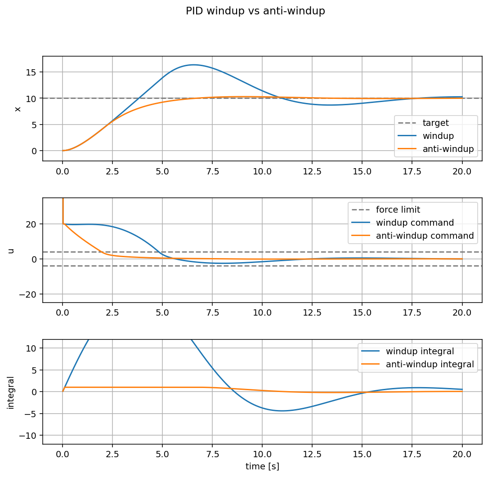

PID Windup
What is integral windup
Integral windup happens when the integral term keeps growing while the actuator is already saturated.
For example, a motor command might be limited to:
If the PID controller asks for 40 N, the real system still receives only
10 N. The error remains large, so the integral term keeps accumulating. Later,
when the system gets close to the target, the large stored integral still pushes
the plant too hard. This can create overshoot, oscillation, and slow recovery.
Windup is not the part that helps. The useful part is anti-windup: limiting or correcting the integral term so the controller does not store more error than the actuator can use.
Where windup appears
This is common in robotics because actuators are limited:
- a motor has maximum torque
- a drone has maximum thrust
- a wheel has limited traction
- a servo has a maximum speed
The controller may compute a command that is physically impossible. If the integral term does not know about that limit, it can grow in the wrong direction for too long.
Simple anti-windup idea
A simple approach is to clamp the integral term:
This keeps the integral term useful for removing steady-state error, but prevents it from dominating the response after saturation.
flowchart LR
error["error"] --> integral["integral"]
integral --> clamp["clamp integral"]
clamp --> pid["PID output"]
pid --> saturate["actuator limit"]
saturate --> plant["plant"]Demo
Run the demo:
Use the Windup button to run the controller without integral limiting. Use
the Anti-windup button to run the same controller with a clamped integral
term. Reset clears the graph.
The example compares two controllers on the same mass system:
without anti-windup: the integral term can grow without a limitwith anti-windup: the integral term is clamped
Both controllers use the same actuator limit, so neither one can push harder than the plant allows. The difference is what happens to the integral term while the actuator is saturated.
Expected result:
The anti-windup controller is more stable because it does not keep a large stored integral after the plant gets close to the target.
